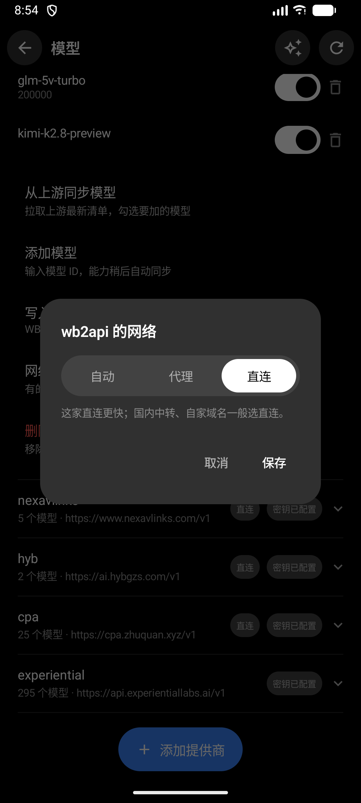
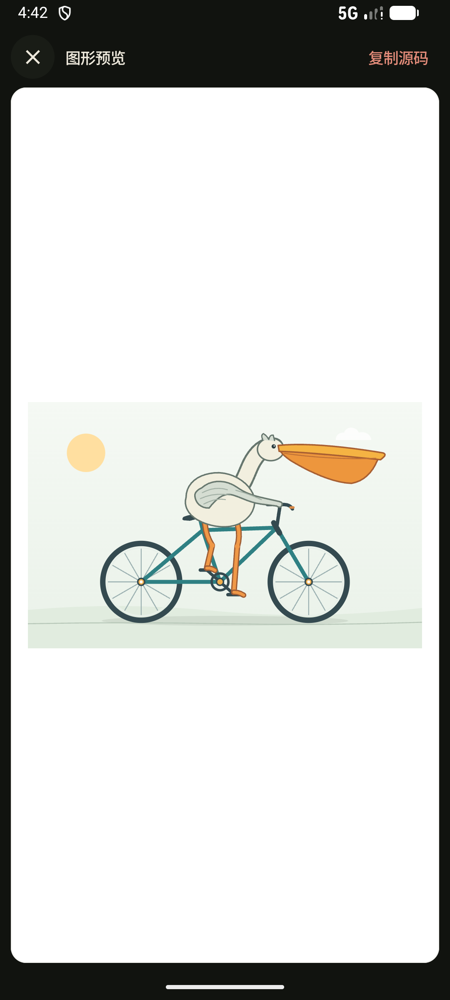

* 调用在线模型时，会向所选服务商发送完成任务所需的内容；异地连接会经过中继转发。存储与传输是两件事，这里都说清楚。
壹 / 差异NOT ANOTHER CHAT CLIENT
它不是「又一个聊天客户端」
聊天客户端让你和模型说话；DeepSeek Harness 让你把活交出去——
干活在你电脑上
文件、终端、浏览器都在本机执行。它真的会动手干活，不是嘴上说说。
手机是遥控器
配对码 10 秒连上。发任务、看进度、收文件——人不在电脑前，活照常干。
数据留在本机
不用注册云账号。手机与电脑直接配对通信，会话、文件与密钥保存在你自己的电脑上。
1
电脑安装桌面端
下载安装，配好你的模型
2
手机扫码或输配对码
十秒内连上自己的电脑
3
手机发任务，电脑执行
结果回到手机上
遥控时需要已配对的电脑保持运行并可连接；断线后会自动重连。
贰 / 遥控THE CONTROLLER IN YOUR POCKET
人在外面，
任务在家里跑
她是配套的控制器：配对一次，随时回来接着用。
- 配对码或扫码连接；同一 Wi-Fi 直连，异地自动走中继
- 顶栏实时三态：已连接 / 正在连接 / 未连接，心里有数
- 任务进度、思考过程、生成的文件，手机上全程可见
- 不在电脑前也能插话、排队、叫停
叁 / 鲸鱼娘A COMPANION, NOT A DECORATION
她叫鲸鱼娘，
是会陪你干活的看板娘
这是手机端花心思最多的部分——她不是装饰，她有自己的小情绪。
你好呀～我是鲸鱼娘
网页互动演示 · 点她试试——App 里她真的会跟着任务变情绪，悬浮球双击还能摸头。

肆 / 模型EVERY PROVIDER, ITS OWN ROUTE
不同服务商，
各走各的网络。
聊天页、模型页、网络路由，手机上一站式管理（作用于桌面端引擎的模型请求）。
- 支持兼容接口的服务商：DeepSeek、Claude、GPT、国内中转……（能力取决于服务与模型）
- 「代理 / 直连」按服务商单独设——必须走代理的、必须直连的，互不打架
- 上游清单有更新？一键同步服务商提供的模型清单
api.x.ai代理
国内中转服务直连
默认路由跟随系统
配置示例，以你的网络环境为准
伍 / 成果RESULTS, BACK IN YOUR HAND
它画的东西，
手机上就能看
干活过程与成果都在两端无缝流转。
- 图形 / 网页预览，居中呈现；代码可复制、可存成文件
- 会话生成的文件按会话归属，点开即看
- 桌面端是完整工作台：插件市场、皮肤、多会话并行

陆 / 对照DIFFERENT BY MECHANISM
和你用过的那些，不太一样
不做贬低式对比，只讲机制差异；「普通聊天客户端」指典型形态，不代表每一家都如此。
| 普通聊天客户端 | DeepSeek Harness | |
|---|---|---|
| 任务在哪执行 | 在云端运行，接触不到你本机的文件 | 你自己的电脑：文件、终端、浏览器全能动 |
| 手机的角色 | 另一个独立客户端，与桌面互不相通 | 配套遥控器，指挥同一台电脑 |
| 账号体系 | 通常需要账号登录与云同步 | 不用注册，配对码直连 |
| 国内下载 | 视网络情况，有时需要代理 | 国内直连，点开就下 |
| 角色化交互 | 少见此类设计 | 鲸鱼娘：情绪、悬浮球、摸头彩蛋（本产品特色） |
电脑端
v0.5.28手机端
v0.3.4下载不动？试试「直连加速」链接，或挂上代理走 GitHub Releases。每个版本都附更新日志与哈希校验。
捌 / 更新STILL GROWING
最近两个版本，更新了这些
桌面端 0.6.2
设置里多了一个「文件传输」
- 隔空传输（桥接 0.2.29）：设置 →「文件传输」与手机互传文件——选文件放入、打开所在文件夹、删除，手机上（0.4.0）在会话列表右上角收发
- 「正在生成」递给手机（0.6.0，桥接 0.2.28）：电脑上助手正在写的正文逐字转发到手机；图片直通（支持视觉的模型直接读原图）
- 修复（0.6.1→0.6.2）：设置里的「文件传输」与手机配对卡片加载不出来（引擎地址解析带了 token 尾巴，环回接口请求落到「未认证的根路径」）
手机端 0.4.0
隔空传输，文件互传
- 会话列表右上角新增「文件传输」：和电脑互传文件，像文件传输助手一样——两端都能看、能存、能删
- 手机可发文件 / 图片（单个最大 64MB，直传不受旧版限制）；电脑放进「设置 → 文件传输」的文件，手机几秒内可见
- 图片可全屏预览、一键保存到「下载」；删除会同步清掉电脑上的记录与文件
- 流式输出改为节流渲染（200 ms 批量上屏），不再闪屏
玖 / 反馈WRITE BACK TO US
你的每一句吐槽，
都会变成下一个版本
这个项目由一个人开发维护，每一条反馈作者都会看。
报告问题
崩溃、卡住、下载不动？把版本和现象发过来。
去 GitHub Issues →
功能建议
想让它多会点什么？说说你的使用场景。
去 GitHub Issues →
讨论交流
不会用、想看看别人怎么玩，来讨论区坐坐。
去 GitHub Discussions →
📮 站点评论区（基于 GitHub Discussions）正在接入；暂时先用上面的入口，作者都会看到。
拾 / 问答BEFORE YOU BEGIN
常见问题
这是 DeepSeek 官方软件吗？
不是。这是社区项目，由个人开发者制作。核心引擎使用官方 npm 包 @deepseek-ai/dsh，桌面端与手机端是围绕它做的配套客户端；与 DeepSeek 公司没有隶属关系。
免费吗？开源吗？
客户端免费。桌面端与手机端源码都在 GitHub 上公开；模型费用由你使用的服务商收取（用自己的 API Key）。
我的数据存在哪里？
全部在你自己的电脑上：会话、生成的文件、密钥都在本机。没有云账号，手机只是通过配对的加密通道遥控电脑，不经过我们的任何服务器存储。
手机和电脑怎么连？需要公网 IP 吗？
不需要。同一 Wi-Fi 下直接局域网连接；不在同一网络时自动走中继（含国内直连节点）。配对码或扫码即可完成。
支持哪些模型？
任何兼容 OpenAI / Anthropic 接口的服务商都可以接进来：DeepSeek 官方、Claude、GPT、以及国内各家 API 中转。每家公司还能单独设「代理 / 直连」路由。
它和 Cherry Studio、Chatbox 这类客户端有什么不同？
那些是「聊天客户端」——你和模型对话。DeepSeek Harness 是「干活引擎 + 遥控器」——任务在你电脑上真实执行（能碰文件、能跑命令），你用手机在外面指挥它、看进度、取结果。两者可以共存，但解决的问题不一样。
怎么更新？
桌面端启动时自动检查新版本；手机端在「设置 → 检查更新」里升级；官网提供当前最新版本。更新过程中你的数据与配置都会保留。
遇到问题找谁？
上面反馈区的三个入口作者都会看。报告问题时附上：系统版本、软件版本、复现步骤，有截图更好。